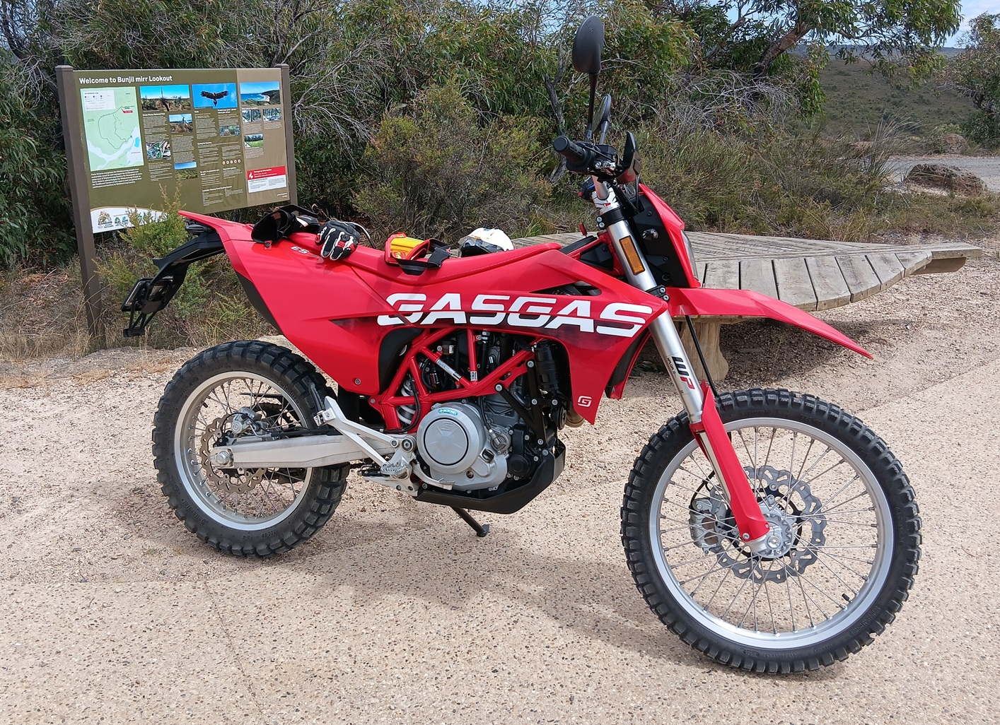
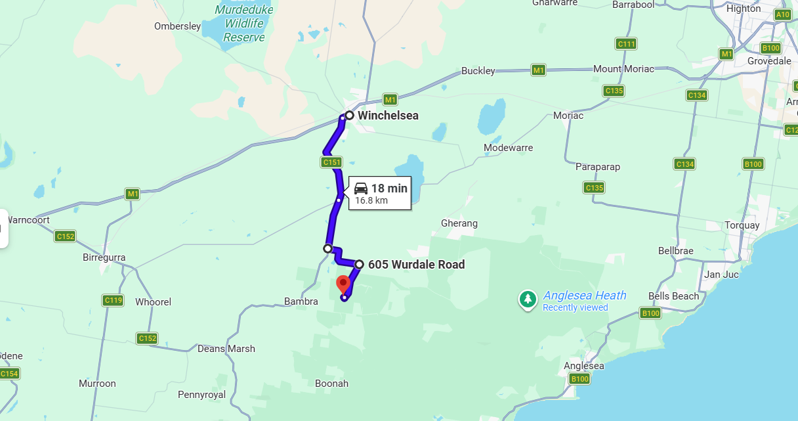
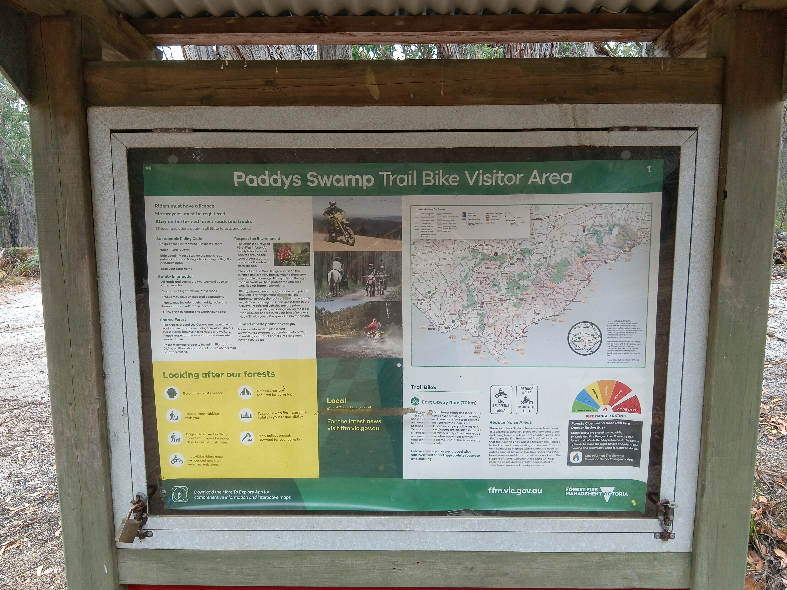
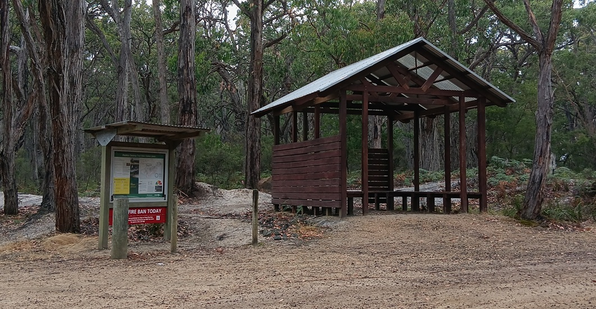

Paddys Swamp Trail Bike Visitor Area is located only 20 minutes drive and approximately 16.8 km south of Winchelsea, on Paddys Swamp Road. The area is easily accessed via sealed and gravel roads from Winchelsea and is central to a large network of forest roads and tracks suitable for trail bike riding. The exact GPS loaction is -38.36311, 143.98456
The visitor area ensures motorcycle riders have quick and easy access to Anglesea Heath forest trails and 4WD tracks. It provides riders with information on where to ride and offers a range of facilities to make either end of a ride more enjoyable.
The Great Otway National Park and Otway Forest Park are situated south of the Princes Highway, which runs between Geelong and Warrnambool. The Paddys Swamp Trail Bike Visitor Area is easily accessed via Winchelsea, which is located halfway between Geelong and Colac on the Princes Highway.
Route from Winchelsea to Paddys Swamp Trail Bike Visitor Area (16.8 km / approx. 20 mins):


